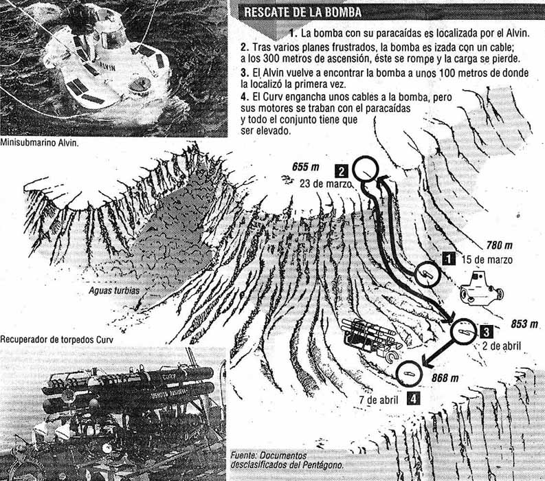

Del accidente aéreo todos los habitantes de Palomares salieron ilesos aunque por muy poco ya que las piezas del fuselaje del avión habían llovido del cielo sobre las calles y los aledaños de la localidad; incluso partes de avión cayeron a escasos metros de la escuela que estaba llena de niños y niñas, testigos presenciales del accidente.
Pero todo lo bueno dura poco porque, a las pocas horas del accidente, se supo que el el B-52 iba cargado con cuatro bombas 75 veces más potentes que las que arrasaron Hiroshima y Nagasaki. A raíz de esto, el ejército estadounidense, con distintas bases militares en suelo español, concibe una operación de búsqueda y rescate de las bombas nucleares- "broken arrows" como las denominaron ellos- y el Gobierno español, con el mayor de los sigilos una campaña de desinformación para tratar de no alarmar a la población y restar importancia a lo sucedido.
De las 4 bombas que transportaba el avión, que afortunadamente no explotaron, tres cayeron en tierra, 1 en perfecto estado y las otras dos con desperfectos provocando el vertido de parte de Plutonio de la cabeza nuclear, y la cuarta desapareció en el mar obligando a una operación de rescate sin precedentes en la que intervinieron miles de hombres y los mayores avances tecnológicos en reconocimiento del fondo marino; Palomares acababa de convertirse en el lugar más peligroso del mundo y ahora, también, en un polo tecnológico.
Toda la operación permaneció clasificada como secreto hasta hace un par de años pero hoy ya sabemos en qué consistió esa operación de rescate. Échale un ojo a la siguiente imagen para saber más sobre esta operación de rescate.
